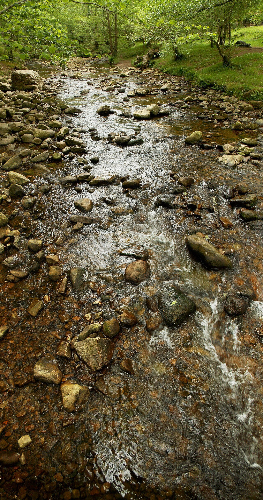
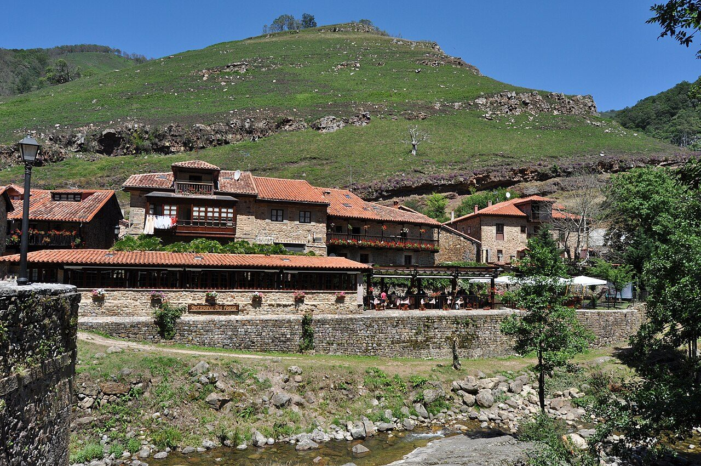

Parque Natural de Saja-Besaya
Criterios: PN 1.4, PN 5.2, PN 7.1
🤔 Pienso5 min
Qué hago aquí: Piensa un momento y contesta con lo que ya sabes. No pasa nada si no lo sabes: es para empezar.
En otoño, en algunos montes de Cantabria se oyen bramidos por la noche. ¿Sabes de qué animal son? ¿Por qué lo hace?
📖 Leo y aprendo15 min
Qué hago aquí: Lee despacio, mira los dibujos y los ejemplos, y quédate con la idea clave del final.

Foto: Rubén Díaz Caviedes · CC BY-SA 2.0 · El río Bayones en Ucieda (14231840464).jpg
En el parque viven ciervos, corzos, jabalíes, lobos, águilas y el urogallo. En septiembre y octubre, los ciervos machos hacen la berrea: braman y luchan con sus cuernas para conseguir a las hembras. Mucha gente va a escucharla al amanecer o al atardecer, en silencio y sin acercarse.
Dentro del parque está Bárcena Mayor, el pueblo más antiguo del valle de Cabuérniga, con casas de piedra y madera, balcones y calles empedradas. Es Conjunto Histórico: el patrimonio natural y el cultural van juntos.

Foto: Luis Rogelio HM · CC BY-SA 2.0 · Barcena Mayor (Los Tojos) - 040 (30077414484).jpg
✏️ Hago25 min
Qué hago aquí: Haz las actividades en orden. Empieza siempre por las básicas.
Explica por qué Saja-Besaya es importante: tamaño, tipo de bosques, ríos y fauna. Usa al menos dos datos numéricos.
Explica qué es la berrea, cuándo ocurre y cinco normas para observarla sin molestar a los ciervos.
Bárcena Mayor es Conjunto Histórico dentro de un parque natural. Explica por qué en este caso el patrimonio natural y el cultural «van juntos».
Compara Saja-Besaya con las marismas de Santoña: ambiente, especies protagonistas, principal amenaza y época del año en que es más espectacular.
Bárcena Mayor recibe muchos visitantes. Explica cómo puede el turismo ayudar a que el pueblo no se quede sin habitantes y qué riesgos tiene para un pueblo tan pequeño.
Un hayedo maduro tiene árboles viejos y troncos muertos en el suelo. Explica por qué la madera muerta es importante para la biodiversidad y por qué no conviene «limpiar» el bosque.
Elige uno de los seis parques naturales y diseña una ruta de un día: recorrido, tres paradas de interpretación y qué explicarías en cada una.
✏️ Puedes responder escribiendo, con un dibujo o un esquema, o contándolo en voz alta.
🚀 Amplío (si quieres saber más)
Qué hago aquí: ¿Has terminado? Lee la curiosidad o elige el reto. Es voluntario.
Compara los seis parques naturales de Cantabria en una tabla: año de declaración, ambiente principal, especie o elemento estrella y principal amenaza. Después ordénalos por tamaño buscando su superficie y saca una conclusión: ¿qué tipos de paisaje están más protegidos y cuáles menos?
✅ Compruebo5 min
Qué hago aquí: Contesta sin mirar la ficha y marca cómo lo llevas.